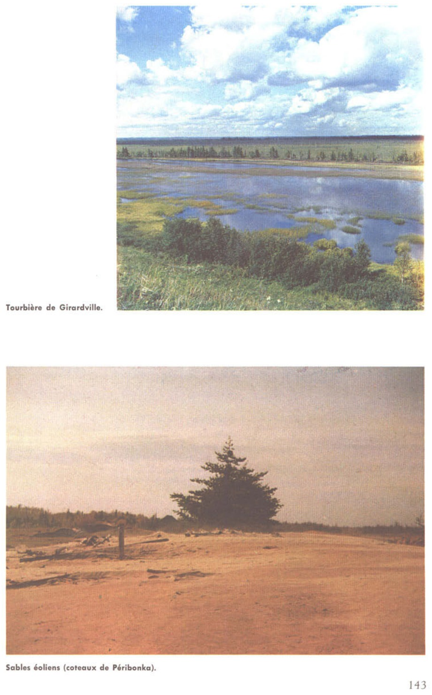

Identification & Caractéristiques Générales
La série Péribonka se développe sur des sédiments minéraux quaternaires d'origine fluviolacustre, caractérisés par une stratification fine. Le matériau parental est constitué de dépôts alluviaux et deltaïques récents, mis en place sous forme de bandes étroites le long des vallées fluviales, notamment en bordure des rivières Péribonka, Moreau, ainsi qu'aux embouchures de la rivière Mistassini et de la Rivière-à-l'Ours. Sur le plan géomorphologique, ces sols occupent des terrasses planes à faiblement inclinées, caractérisées par une topographie régulière. Le profil se distingue par une alternance caractéristique de lits minces de sable très fin et de limon, où la fraction limoneuse prédomine généralement dans les horizons supérieurs avant de décroître en profondeur pour faire place à des textures plus sableuses.
Sur le plan morphologique et hydropédologique, le profil présente un drainage naturel modéré à imparfait, conditionné par la variabilité texturale verticale et la présence de lits stratifiés moins perméables qui peuvent restreindre temporairement le mouvement descendant de l'eau. La réaction du sol est généralement acide, reflétant la nature minéralogique des sédiments locaux issus du Bouclier canadien. La structure des horizons de surface est friable, mais la compacité peut varier dans les strates sous-jacentes en raison de la nature litée des sédiments. La pierrosité est absente ou très faible dans la solum en raison du mode de dépôt fluviatile.
Agronomiquement, les sols de la série Péribonka conviennent à la production de cultures fourragères et de certaines grandes cultures, bien que leur mise en valeur dépende étroitement de la gestion hydrique. La limitation majeure réside dans le risque d'engorgement temporaire au printemps ou lors de périodes de fortes précipitations, nécessitant l'installation d'un réseau de drainage souterrain pour optimiser la portance et l'ensemencement hâtif. Un travail du sol adapté est requis pour prévenir la battance et la formation d'une croûte de surface sur les horizons riches en limons fins, tandis que des apports réguliers de amendements calciques sont indispensables pour corriger l'acidité naturelle et maintenir la fertilité chimique.
Caractères Distinctifs & Morphologie Génétique (Pédologie de la région du Lac-Sa — Page 27)
- Topographie : faiblement ondulée
- Drainage : bon
- Grand-groupe génétique : podzol
- Degré d'érosion : en nappe; faible à modéré (W1-W2)**
- Classe d'utilisation : 3***
- Association géographique : séries Moreau, Chapdelaine, Dolbeau, Boulanger et Vauvert
- Végétation naturelle : trembles, épinettes, sapins, aulnes, etc.
Classification Taxonomique & Environnement Pédologique
| Ordre Pédologique | Podzolique |
|---|---|
| Grand Groupe (SCSS) | Podzol humo-ferrique |
| Sous-Groupe Taxonomique | Podzol humo-ferrique orthique |
| Famille Pédologique | Loameuse-grossière, mixte sableux, acide |
| Mode de Dépôt Parental | Fluviatile |
| Classe de Drainage Naturel | Bien drainé |
| Régime Thermique & Humidité | Frais / Subhumide |
Description Morphologique du Profil Type
Séquence génétique des horizons pédologiques caractérisant le profil type représentatif de la série Péribonka :
Profil représentatif — Pédologie de la région du Lac-Sa
✓ Source : Pédologie de la région du Lac-Sa — Page 28Couleur Munsell : 10YR 4/3
Structure & Consistance : Finement granulaire
Description morphologique : Loam limoneux brun foncé (10YR 4/3). Structure finement granulaire, finement développée; pH: 5.6.
Couleur Munsell : Non précisée
Structure & Consistance : Polyédrique à granulaire
Description morphologique : Dilué par le labour.
Couleur Munsell : 10YR 5/8
Structure & Consistance : Granulaire
Description morphologique : Loam sableux brun-jaune (10YR 5/8); structure granulaire, faiblement développée; pH: 6.3.
Couleur Munsell : 10YR 6/4, 10YR 5/8
Structure & Consistance : Polyédrique à granulaire
Description morphologique : Loam sableux brun-jaune clair (10YR 6/4) avec grandes taches brun-jaune (10YR 5/8); passage graduel de B 1 à C: pH: 6.3.
Couleur Munsell : 10YR 7/1, 10YR 5/8
Structure & Consistance : Polyédrique à granulaire
Description morphologique : Sable gris clair (10YR 7/1) stratifié et très bariolé de rouille (10YR 5/8; pH: 6.6.
Couleur Munsell : 10YR 6/1
Structure & Consistance : Polyédrique à granulaire
Description morphologique : Sable loameux gris (10YR 6/1) moins rouillé que C 1 ; stratification mince; abondance de mica; fréquence de lits de limon ou de sable très fin dans les plans de séparations; sable plus fin, plus tassé et plus limoneux que C 1 ; entre C 1 et C 2 il existe un lit de rouille continu de ¼ de pouce d'épaisseur; pH: 6.3.
Profils Photographiques & Planches de Terrain
Documents iconographiques, figures pédologiques et coupes de terrain documentées dans les mémoires d'inventaire pour de la série Péribonka :

Propriétés Physico-Chimiques & Analyses de Laboratoire
| Horizon | Texture | pH (H₂O) | M.O. % | C.E.C. (meq/100g) | Sable % | Limon % | Argile % | Ca éch. | Mg éch. | K éch. | Cond. hydr. (cm/h) | Densité |
|---|---|---|---|---|---|---|---|---|---|---|---|---|
| 1 | Loam limoneux | 5.5 | 6.3 | 15.4 | 28.0 | 58.0 | 14.0 | 2.99 | 0.1 | 0.04 | 1.75 | 0.96 |
| 2 | Loam limoneux | 5.8 | 3.65 | 13.3 | 34.0 | 58.0 | 8.0 | 1.7 | 0.09 | 0.03 | 1.08 | 1.06 |
| 3 | Loam sableux | 6.0 | 0.64 | 6.0 | 51.0 | 43.0 | 6.0 | 0.76 | 0.07 | 0.03 | 2.53 | 1.44 |
Particularités Régionales, Phases & Variantes Pédologiques
Déclinaisons régionales, faciès texturaux, phases d'érosion ou de pierrosité et variantes cartographiées par étude pour de la série Péribonka :
| Étude Régionale | Symbole | Appellation / Phase / Variante | Différenciation avec la série type (Analyse pédologique) |
|---|---|---|---|
| Pédologie de la région du Lac-Saint-Jean | Pi |
Péribonka loam limoneux | Modalité modale de référence (type de base de la série). |
Distribution Pédo-Paysagère & Représentativité Cartographique (Couverture PPS 2026)
- Moreau sable loameux (MOU) — co-occurrente dans 23 polygone(s)
- Chapdeleine loam sableux (CPE) — co-occurrente dans 11 polygone(s)
- Alluvion non différenciée à surface sableuse (ALL) — co-occurrente dans 7 polygone(s)
Aptitudes Agronomiques, Hydropédologie & Conservation des Sols
Indicateurs Hydropédologiques & Vulnérabilité à l'Érosion (BDHP 2026)
Interprétation BDHP : Potentiel de ruissellement modérément faible. Infiltration modérée avec textures moyennes à modérément grossières.
Classement selon l'Inventaire des Terres du Canada (ITC / CLI) : Classe 1.
- Potentiel agricole : Terroir adapté aux cultures régionales selon la texture dominante et la régie de drainage.
- Contraintes majeures : Bien drainé. Risque d'engorgement temporaire ou d'excès d'eau printanier.
- Gestion & Aménagement : Drainage souterrain ou superficiel préconisé sur les terres planes. Chaulage et apport organique régulier selon les bilans agronomiques.
- Cultures adaptées : Grandes cultures (maïs, soya, céréales), prairies fourragères et cultures maraîchères selon le contexte géomorphologique.